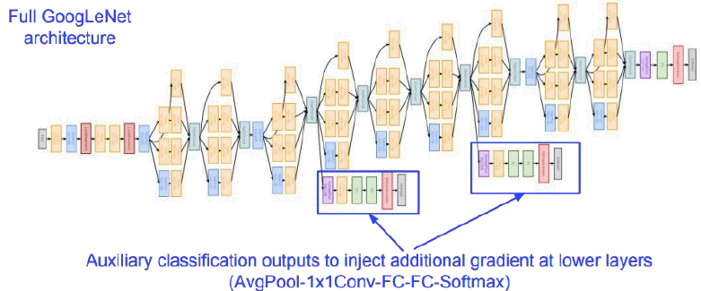

1 Convolutional Neural Networks
What is the problem in using feed-forward networks for image data?
We do rasterization of image, so we lose special context in case of feed-forward image.
When we flatten the image in case of feed forward network, we will have humongous number of inputs data, so we will have much more parameter.
Convolutional Neural Networks
Must deal with very high dimensional inputs
- 150 x 150 pixels = 22500 inputs, or 3 x 22500 if RGB pixels
Need to look at the 2D topology of pixels (or 3D for video data)
Need invariance to certain variations we can expect
- Translations, illumination, etc.
Convolutional Neural Networks
- Object can appear either in the left image or in the right image
- Output indicates presence of object regardless of position
- What do we know about the weights?
- Each possible location the object can appear in has its own set of hidden units
- Each set detects the same features except in a different location.
- Locations can overlap
Originally
- Local Connectivity
- Parameter Sharing
- Pooling
More recently
Normalization
Last layer customization
Loss functions
If the cat is there always only to left at the time of training, and cat is it the time of testing at down it will not work,
so what we can do is that we can divide the network in small patches, and we can have different set of weights
But we also want the weight to be shared so can we have just one kernal for all the patches
we want to give focus on high activation on one local area so we can use pooling
using all these we get the notion of convolution network
Local Connectivity
- Each hidden unit is connected only to a subregion (patch) of the input image
- It is connected to all channels -1 if greyscale image
- 3 (R, G, B) for color image
- Solves the following problems:
- Fully connected hidden layer would have an unmanageable number of parameters
- Computing the linear activations of the hidden units would be very expensive
- Units are connected to all channels:
- 1 channel if grayscale image, 3 channels (R, G, B) if color image
- Units organized into the same ‘‘feature map’’ share parameters
- Hidden units within a feature map cover different positions in the image
- 1 channel if grayscale image, 3 channels (R, G, B) if color image
Parameter Sharing
Units organized into the same ‘‘feature map’’ share parameters
Hidden units within a feature map cover different positions in the image
Reduces the number of parameters further
Will extract the same features at every position
features are equivariant or invariant
we want invariance here
equivariant means if we change the input by 10, output will change by 10, but in our chase we want even if position change the output should be the same
Local Connectivity and Parameter Sharing
Fully connected layer
- Hidden Units: 120,000
- Params : 14.4 billion
- 200x200x3
Locally connected layer
- Hidden Units: 120,000
- Params : 3.2 Million
The convolution of an image X with a kernel k is computed as: (x*k)_{ij}=\,\sum_{p q}\,x_{i+p,j+q}\,\,\,k_{r-p,r-q}
Convolutional layer with single feature map.
- Sharing parameters
- Exploiting the stationarity property and preserves locality of pixel dependencies
Convolutional Layer (with Stride)
Image size: W_1\times H_1\times D_1
Receptive field size: F\times F
#Feature maps: K
It is also better to do zero padding to preserve input size spatially.
W_2=(W_1-F)/S+1
H_2=(H_1-F)/S+1
D_2=K
stride reduces the computation
aggregating could help in getting better solution
First way
- To find receptive field size r_{l-1} of a layer l-1 : r_{l-1}=r_l*s_l+(f_l-s_l) here, l_l is the receptive field size of the current layer
s_l is the stride which brings to the current layer,
f_l is the kernel size which brings to the current layer.
Another way
- To find receptive filed size a layer r_{l}=f_l+s_l(r_l-1)
Convolutional Layer
y_{j}^{n}\,=\,f(\sum_{k=1}^{F}\,x_{k}^{n-1}\,*\,w_{k j}^{n})
- Here f is a non linear activation function.
- F = no. of feature maps
- n= layer index
- * represents element by element multiplication
A typical deep convolutional network
Other layers
- Pooling ( Next key idea)
- Normalization
- Fully connected
Pooling Layer
Role of an aggregator.
Invariance to image transformation and increases compactness to representation.
Pooling types: Max, Average, L2 etc.
Every patch is non-overlapping.
Take max value from a non-overlapping patch
pooling is done on each channel individually
It serves the purpose of aggregator
It also servers the purpose of little bit of local in-variance.
Because we are taking best in a local patch.
we can do max agv etc, but max works the best.
There are no weight on the pooling layer, nothing to learn
The subsequent layer gets even lesser work to do due to max pool
Normalization Layer
- Local contrast normalization (Jarrett
- Improves invariances
- Improves sparsity
- Local response normalization
- Kind of “lateral inhibition” and performed across the channels
- Batch normalization
- Activation of the mini batch is centered to zero mean and unit variance to prevent internal covariate shifts.
Initially CNN had no normalization layer
Now we have batch norm
we can control the varience using batch norm
there are other norm
local contrast norm, normalize the contrast in a patch, locally for every patch
local response normalization
- take one top left pixel across all the feature map, ie across channel and normalize it, kind of lateral inhibition and performed across the channels
two successive 3x3 filter is same as 5x5 filter
Fully Connected Layer
- Multi layer perceptron
- Role of a classifier
- Generally used in final layers to classify the object represented in terms of discriminative parts and higher semantic entities.
- SoftMax
- Normalizes the output. z_{n}=\frac{e^{x_{n}}}{\sum_{i=1}^{K}e^{x_{i}}}
Case Study: Alex Net
- Winner of ImageNet LSVRC 2012.
- Trained over 1.2M images using SGD with regularization.
- Deep architecture (60M parameters)
- Optimized GPU implementation (cuda convnet)
- input to Alex net is fromm image net, image size 224 x 224, filter size is 11x11x3 and stride of 4
- image itself was padded with 3 pix to make 227 x 227 (227-11)/4+1= 55
AlexNet Architecture
- 8 Layers in total (5 convolutional layers, 3 fully connected layers)
- Trained on ImageNet Dataset
- Response normalization layers follow the first and second convolutional layers.
- Max pooling follow first, second and the fifth convolutional layers.
- The ReLU non linearity is applied to the output of every layer
Parameter Calculation
W_2=[\ (\left.W_1-F+2P\right)/S]+1 \text{ and } D_2=K
S = 4, W_1 = 227, F =11, P = 0, D_2 = 96
W_2 = (227 - 11 )/4 + 1 = 55
Output Size: 55 \times 55 \times 96
Convolutional layers cumulatively contain about 90-95% of computation, only about 5% of the parameters
Fully connected layers contain about 95% of parameters.
Trained with stochastic gradient descent
- on two NVIDIA GTX 580 3GB GPUs, for about a week
650,000 neurons, 60 M parameters, 630 M connections, Final feature layer: 4096 - dimensional
Learning: Minimizing the loss function (incl. regularization) w.r.t . parameters of the network \theta^{\ast}=a r g m i n_{\theta}\sum_{n=1}^{N}L(x^{n},y^{n},\theta)
2 Backpropagation in CNNs
As we know that we have modular designs, so we will focus on a backward pass on just one module. Let the points on X, w and y be X(r,c), w(a,b) and y(r,c). Consider the below diagram.
X\left\lbrack r+a,c+b\right\rbrack Can be considered as a cropped part of the image where filter was applied in a particular stride. So now we can write the below equation.
y\left\lbrack r,c\right\rbrack =\sum_{a=0}^{k_1 -1} \sum_{b=0}^{k_2 -1} X\left\lbrack r+a,c+b\right\rbrack w\left\lbrack a,b\right\rbrack
This equation denotes the convolution of the cropped part of the image.
Now we want to calculate partial derivative of L with respect to W at the point a', b'. Since the filter w[a',b'] effects every parts of y so we need to take a summation over y. Since y has a dimension of r\times c. So we can write the equation as shown below. \frac{\partial L}{\partial w\left\lbrack a^{\prime } ,b^{\prime } \right\rbrack }=\sum_{r=0}^{N_1 -1} \sum_{c=0}^{N_2 -1} \frac{\partial L}{\partial y\left\lbrack r,c\right\rbrack }\frac{\partial y\left\lbrack r,c\right\rbrack }{\partial w\left\lbrack a^{\prime } ,b^{\prime } \right\rbrack }
The quantity \frac{\partial L}{\partial y\left\lbrack r,c\right\rbrack } is known as it is incoming gradient from the upper layer in general, so we need to calculate only \frac{\partial y\left\lbrack r,c\right\rbrack }{\partial w\left\lbrack a^{\prime } ,b^{\prime } \right\rbrack }, This equation denotes the partial derivative of y with respect to a particular point of w,Which depends on only the same particular points in corresponding to X. So we can write. \frac{\partial y\left\lbrack r,c\right\rbrack }{\partial w\left\lbrack a^{\prime } ,b^{\prime } \right\rbrack }=X\left\lbrack r+a^{\prime } ,c+b^{\prime } \right\rbrack So finally we can write as below. \frac{\partial L}{\partial w\left\lbrack a^{\prime } ,b^{\prime } \right\rbrack }=\sum_{r=0}^{N_1 -1} \sum_{c=0}^{N_2 -1} \frac{\partial L}{\partial y\left\lbrack r,c\right\rbrack }X\left\lbrack r+a^{\prime } ,c+b^{\prime } \right\rbrack
Now we are going to find the gradient with respect to X.Here we need to understand that a particular point in X affects an area (patch) in y Let’s call this patch as P_Y. \frac{\partial L}{\partial X\left\lbrack r^{\prime } ,c^{\prime } \right\rbrack }=\sum_{P_y }^{\;} \frac{\partial L}{\partial y_{P_y } }\frac{\partial y_{P_y } }{\partial X\left\lbrack r^{\prime } ,c^{\prime } \right\rbrack }
Which can be written as :
\frac{\partial L}{\partial X\left\lbrack r^{\prime } ,c^{\prime } \right\rbrack }=\sum_{a=0}^{k_1 -1} \sum_{b=0}^{k_2 -1} \frac{\partial L}{\partial y\left\lbrack r^{\prime } -a,c^{\prime } -b\right\rbrack }\frac{\partial y\left\lbrack r^{\prime } -a,c^{\prime } -b\right\rbrack }{\partial X\left\lbrack r^{\prime } ,c^{\prime } \right\rbrack }
same as earlier we already know \frac{\partial L}{\partial y\left\lbrack r^{\prime } -a,c^{\prime } -b\right\rbrack } we only need to compute \frac{\partial y\left\lbrack r^{\prime } -a,c^{\prime } -b\right\rbrack }{\partial X\left\lbrack r^{\prime } ,c^{\prime } \right\rbrack }
To find this now we first look at the conv operation itself:
y\left\lbrack r^{\prime } ,c^{\prime } \right\rbrack =\sum_{a^{\prime } =0}^{k_1 -1} \sum_{b^{\prime } =0}^{k_2 -1} X\left\lbrack r^{\prime } +a^{\prime } ,c^{\prime } +b^{\prime } \right\rbrack w\left\lbrack a^{\prime } ,b^{\prime } \right\rbrack
Hence
y\left\lbrack r^{\prime } -a,c^{\prime } -b\right\rbrack =\sum_{a^{\prime } =0}^{k_1 -1} \sum_{b^{\prime } =0}^{k_2 -1} X\left\lbrack r^{\prime } -a+a^{\prime } ,c^{\prime } -b+b^{\prime } \right\rbrack w\left\lbrack a^{\prime } ,b^{\prime } \right\rbrack
In the above equation which w correspond to \partial X\left\lbrack r^{\prime } ,c^{\prime } \right\rbrack, the answer is w[a,b] because in the above equation when a^\prime=a and b^\prime=b it becomes X\left\lbrack r^{\prime } ,c^{\prime } \right\rbrack
In short we just want to know the coefficient of X\left\lbrack r^{\prime } ,c^{\prime } \right\rbrack which is w\left\lbrack a,b\right\rbrack
Hence
\frac{\partial y\left\lbrack r^{\prime } -a,c^{\prime } -b\right\rbrack }{\partial X\left\lbrack r^{\prime } ,c^{\prime } \right\rbrack }=w\left\lbrack a,b\right\rbrack
Finally we get
\frac{\partial L}{\partial X\left\lbrack r^{\prime } ,c^{\prime } \right\rbrack }=\sum_{a=0}^{k_1 -1} \sum_{b=0}^{k_2 -1} \frac{\partial L}{\partial y\left\lbrack r^{\prime } -a,c^{\prime } -b\right\rbrack }w\left\lbrack a,b\right\rbrack
Pooling Layer:
Consider Max pooling.Now consider 2 cross 2 grid, It has total 4 value.Among all these 4 value only one value goes in forward direction.It means that only one has contributed.So the, one who contributes gets rewarded.It means that while doing back propagation, only one will receive the gradient. Other 3 will not receive any gradient.
x = \begin{cases} {\frac{\sum_{k=1}x_{k}}{m}},\,{\frac{\partial g}{\partial x}}={\frac{1}{m}} &\text{mean pooling } \\ {\mathrm{max}}(x),{\frac{\partial g}{\partial x_i}} = \begin{cases} 1 &\text{if } x_i=\max(x) \\ c &\text{if } 0, \text{otherwise} \end{cases} &\text{Max pooling } \\ \|x\|_{p}=\left(\sum_{k=1}|x_{k}|^{p}\right)^{1/p}\ \ ,{\frac{\partial g}{\partial x_i}}=\left(\sum_{k=1}|x_{k}|^{p}\right)^{1/p-1}|x_{i}|^{p-1}& L^P \text{ pooling } \\ \end{cases}
In max pooling, the unit that contributed (won) gets all the gradient.
3 Architectures of CNNs over time
LeNet
- Conv filters were 5 cross 5 and were applied with stride one.
- Pooling layer where 2 x 2 and were applied with with stride two.
- Show the architecture was Conv Pool Conv Pool FC FC.
ZFNet
- CONV1 : Change form (11 x 11 stride 4) to (7 x 7 stride 2)
- CONV3,4,5: instead of 384, 384, 256 filters use 512, 1024, 512
- By doing this they brought ImageNet top 5 error from 16.4% to 11.7%
VGG Net
More layers lead to more nonlinearities
Only 3 x 3 CONV stride 1, pad 1 and 2 x 2 MAXPOOL stride 2
Smaller receptive fields:
- less parameters; faster
- two 3 X 3 leads to 5 X 5; three 3 x 3 leads to 7 x 7, so we can have only 3 x 3 receptive field and should be enough
- Fewer parameters
- Three 3 ^2C^2 (VS) 7 ^2C^2
There was a performance improvement from VGG 11 to 13 and also from 13 to 16. But there was no significant performance improvement from VGG 16 to 19. In fact, the error increased. This can be attributed to vanishing gradient problem.
GoogLeNet
This was a deeper network with more computational efficiency.
- It has total 22 layers.
- It has efficient inception modules.
- It doesn’t have any fully connected layers.
- It has only 5,000,000 parameters, which is 12 times lesser than the alexnet.
- ILSVRC’s 14 classification winner with 6.7% top error 5 error.
What is an inception module?
- The idea here is to design a good local network topology and then stack these modules on top of each other.
- Apply combination of many parallel kernel operations like 1 cross 1 convolution 3 cross 3.convolution operations.
- Can also apply the polling operation in parallel.
- Instead of choosing just one kernel size, we can choose many kernel size and use all together in parallel.
- But now there are 2 problems. The first problem is the computational complexity and the second problem is the size of the output. So to address this issue we use one cross one convolution before others convolutions.
- The notion of one cross one convolution is also called as the bottleneck layer.
- This network doesn’t use any fully connected layer at the output.
- Before stacking all the inception module it usages Stem network.
- It also uses auxiliary classification output to inject additional gradients at lower layer.It helps improving the gradient to flow at the lower layers. 
- It has 22 total layer with weights including each parallel layer in the inception module.
\tiny {\textcolor{#808080}{\boxed{\text{Reference: Dr. Vineeth, IIT Hyderabad }}}}